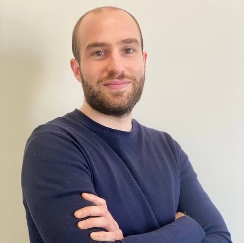
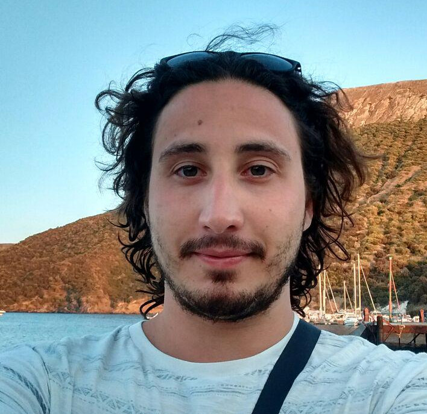
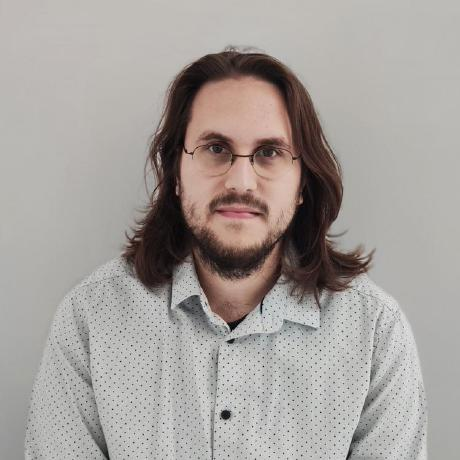
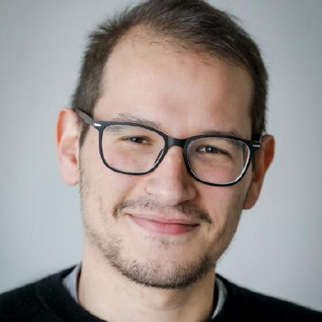

Organizing Committee
|  |  |
 |  |  |
| Andrea Agiollo 📧 | Enkeleda Bardhi 📧 | Giovanni Ciatto 📧 (Primary contact) | Sebastijan Dumancic 📧 | Giuseppe Marra 📧 |
| TU Delft, The Netherlands | TU Delft, The Netherlands | University of Bologna, Italy | TU Delft, The Netherlands | KU Leuven, Belgium |
Keynote
TBD.
Program Committee
- Stefano Colamonaco, KU Leuven
- Pieter Simoens, University of Ghent
- Emanuele De Angelis, CNR Italy
- Rémy Chaput, CPE Lyon
- Reyhan Aydoğan, Ozyegin University
- Roberta Calegari, University of Bologna
- Samy Badreddine, SONY
- Sofoklis Kyriakopoulos, City St George’s University of London
- Stefano Mariani, University of Modena and Reggio Emilia
- Till Mossakowski, University of Osnabrück
- Tilman Hinnerichs, TU Delft
- Vaishak Belle, University of Edinburgh
- Vicent Costa, IIIA - CSIC Spain
- Vincent Dekinderen, KU Leuven
- Abhilekha Dalal, Kansas State University
- Andreas Wichert, INESC-ID University of Lisbon
- Angelo Ferrando, University of Modena and Reggio Emilia
- Arthur Ledaguenel, IRTSystemX and CentraleSupélec
- Damiano Azzolini, University of Ferrara
- Daria Stepanova, Bosch Center for Artificial Intelligence
- David Debot, KU Leuven
- Elena Umili, Sapienza University of Rome
- Emre Kuru, Ozyegin University
- Fabrizio Riguzzi, University of Ferrara
- Federico Sabbatini, University of Urbino
- Francesco Giannini, Scuola Normale Superiore Pisa
- Frank Van Der Velde, University of Twente
- Gheorghe Cosmin Silaghi, Babes-Bolyai University
- Giacomo Camposampiero, IBM Research
- Giacomo Frisoni, University of Bologna
- Gianluca Apriceno, Fondazione Bruno Kessler
- Gianluca Cima, Sapienza University of Rome
- Giuseppe Pisano, University of Bologna
- Hendrik Blockeel, KU Leuven
- Issa Hanou, TU Delft
- Jedrzej Potoniec, Poznan University of Technology
- Jiamou Liu, University of Auckland
- Katrin Schreiberhuber, Vienna University of Economics and Business
- Kislay Raj, Dublin City University
- Luca Salvatore Lorello, University of Pisa
- Lucile Dierckx, Universite Catholique de Louvain
- Maarten Stol, BrainCreators Amsterdam
- Majlinda Llugiqi, WU Wien
- Marco Console, Sapienza University of Rome
- Matteo Magnini, University of Bologna
- Mauro Dragoni, Fondazione Bruno Kessler
- Md Kamruzzaman Sarker, Bowie State University
- Michele Collevati, TU Wien
- Neil Yorke-Smith, TU Delft
- Nicholas Rossetti, University of Brescia
- Nitisha Jain, King’s College London
- Octavio Arriaga, University of Bremen
Other reviewers
- Björn Gehrke, Osnabrück University
- Fahmina Nur Salma, Bowie State University